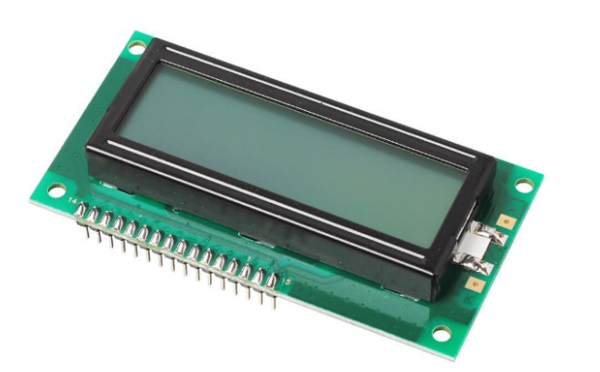
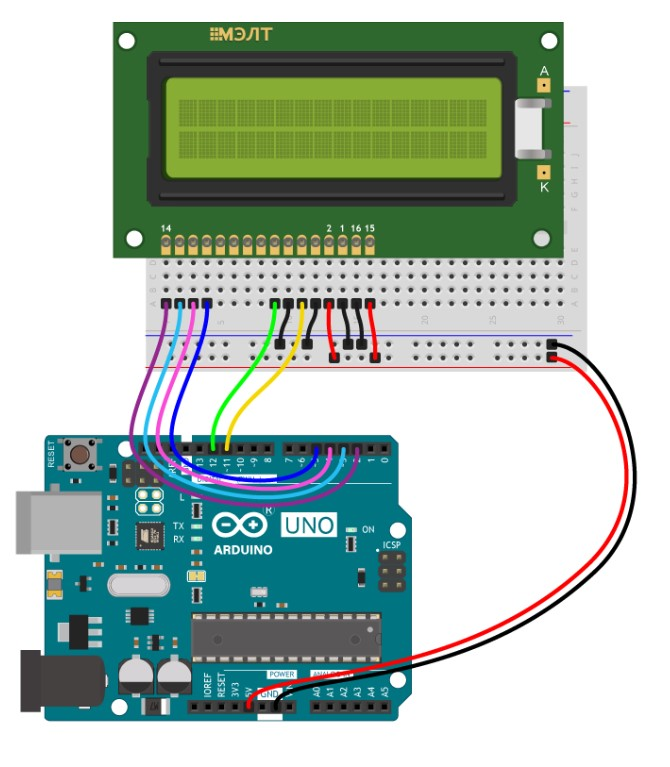
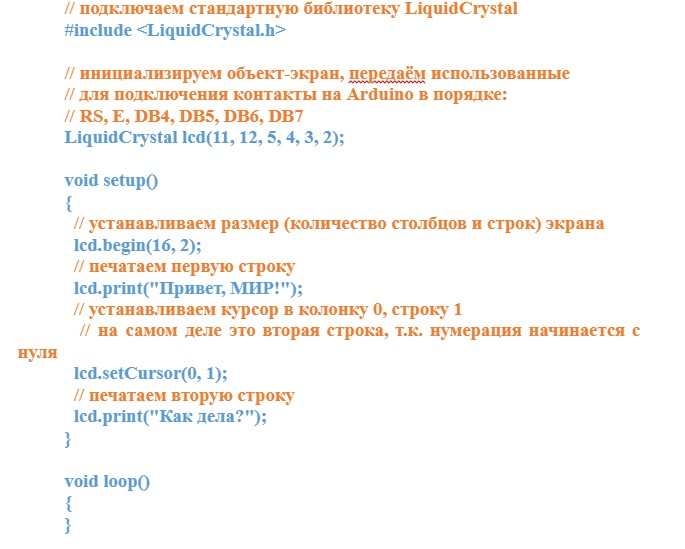
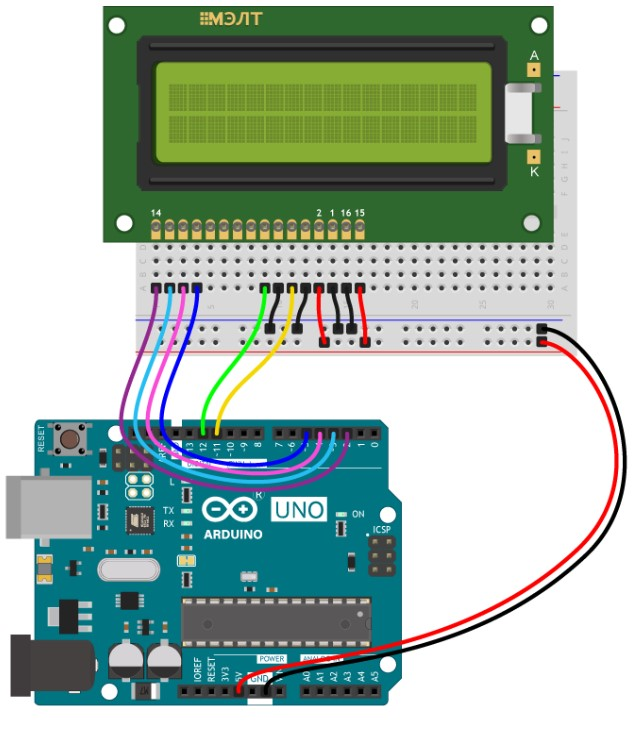

Текстовый экран

Текстовый ЖК-экран на две строки по 16 символов подойдёт для создания интерфейса вашего устройства или отображения показаний датчиков.
Характеристики
- Модель: МЭЛТ MT-16S2H-2FLA
- Тип дисплея: жидкокристаллический (LCD)
- Тип подсветки: светодиодная (LED)
- Индикация: 2 строки по 16 символов
- Цвет: монохромный
- Цвет символов: чёрный
- Цвет фона: янтарный
- Драйвер матрицы: Ангстрем КБ1013ВГ6
- Интерфейс: параллельный 4/8 бит
- Напряжение питания: 5 В
- Максимальный ток потребления: 1 мА
- Потребляемый ток подсветки: 100 мА
- Напряжение логических уровней: 3,3–5 В
- Габариты: 84×44×13 мм
Практическая работа № 1
«Настройка и программирование текстового экрана»
Список деталей для эксперимента:
- 1 плата ArduinoUno
- 1 беспаечная макетная плата
- 1 текстовый экран
- 14 проводов «папа-папа»
Схема на макетке:

Скетч:

Запустите модуляцию
Дополнительное задание:
- Измените текст кода таким образом, что в первой строке дисплея появится ваша Фамилия и инициалы через точку, а во второй строке ваш возраст.
Практическая работа № 2
«Вывод показателей датчика температуры на экран»
Список деталей для эксперимента:
- 1 плата ArduinoUno
- 1 беспаечная макетная плата
- 1 текстовый экран
- 14 проводов «папа-папа»
Схема на макетке:
